→
spring 2025
bachelor thesis
Learning Avalanche Safety Through Play
in
collaboration with White Risk (SLF)
Groupwork By
Tara and Anja
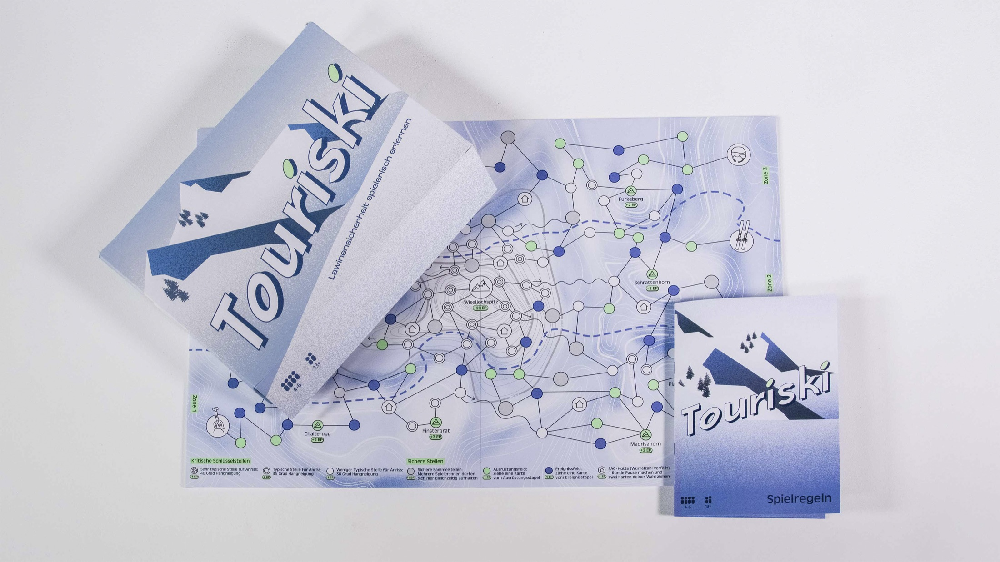
Would you make the right decisions in the event of an avalanche? Our board game puts your knowledge of
avalanche safety to the test. Among snow-covered peaks, risky choices, and tricky situations, you’ll
learn how to navigate the terrain safely. Avalanche awareness and interactive game mechanics bring
life-saving knowledge to life by combining fun with seriousness.Play along and find out how you would
act in a real emergency.
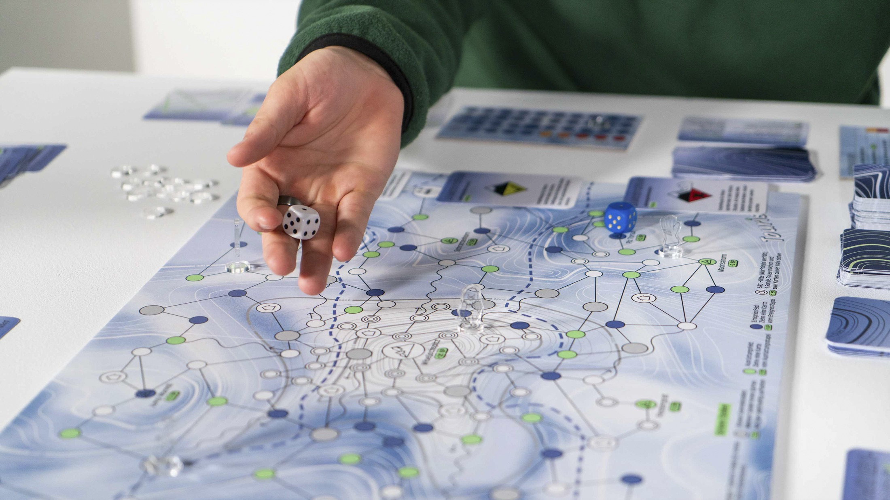
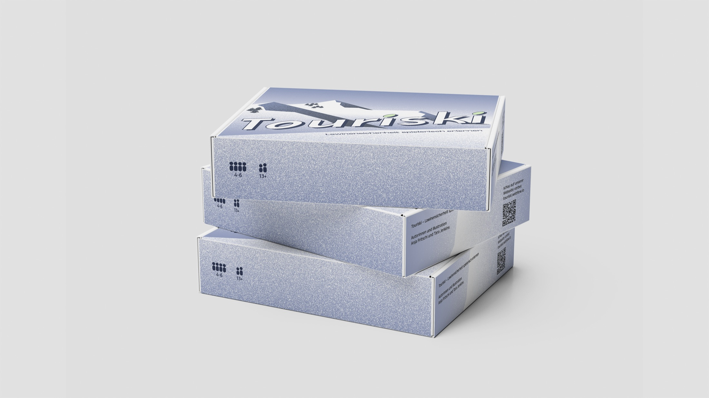
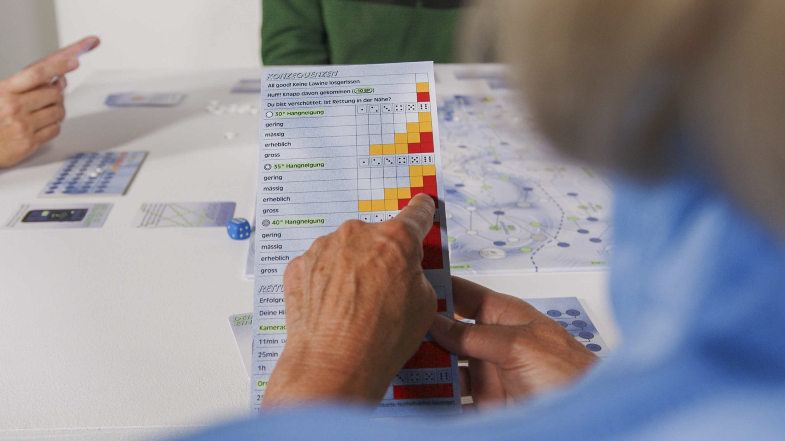

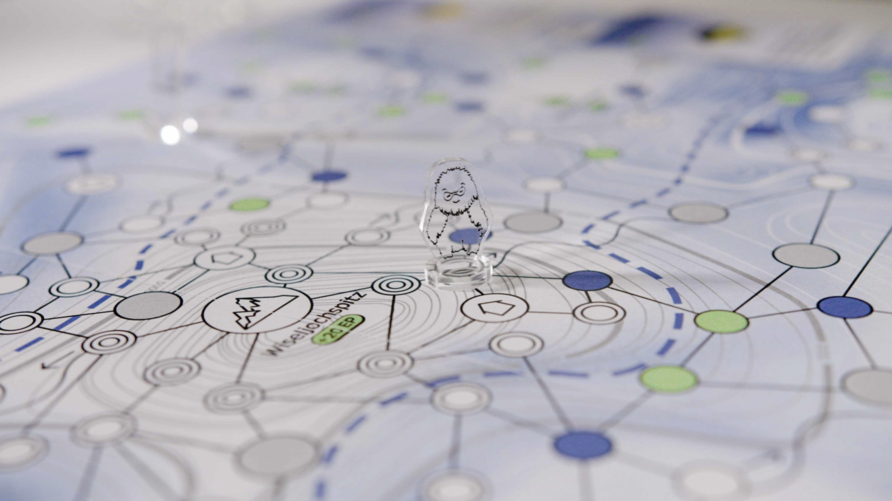
Beyond the pist: The fatal avalanche problem
Avalanches pose a serious risk, especially off-piste, with most triggered by the victims themselves.
The survival chance drops rapidly after 15 minutes, making prevention and immediate action critical.
Raising awareness can therefore save lives.
Our mission, therefore, was straightforward: We
aim to make off-piste snow sports as safe as possible. We believe that by focusing our efforts here,
we can have the most significant impact on reducing fatalities and injuries.
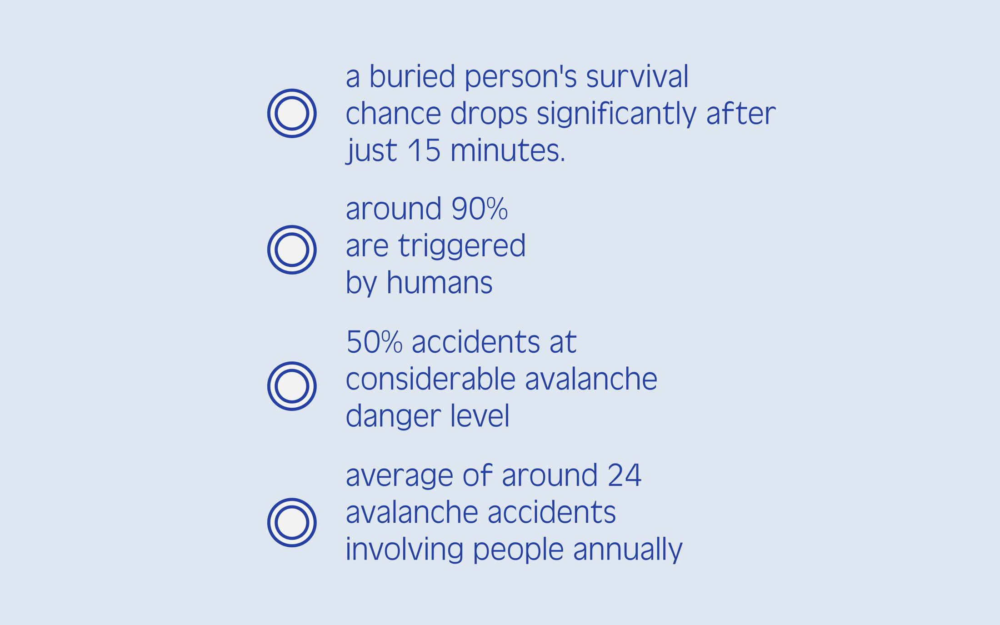
source: slf.ch/de/lawinen/un-faelle-und-law-inen/langjaeh-rige-statistiken/
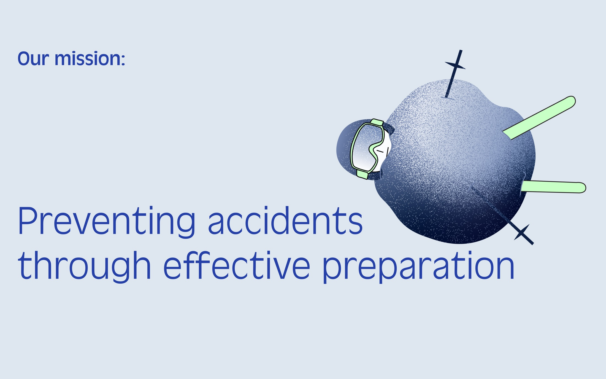
process
Our journey to create Touriski was a hands-on, iterative design process. We started with deep research and expert interviews with avalanche professionals from the SLF and mountain guides to build a solid foundation of knowledge. This led to a series of rapid paper prototypes, where we experimented with different game mechanics. From strategic card games to dynamic board layouts. Each prototype was a learning opportunity, allowing us to refine what makes the experience both educational and fun. Through constant reflection and feedback, we distilled the complex topic of avalanche safety into clear, engaging, and playable core mechanics that define the final game.


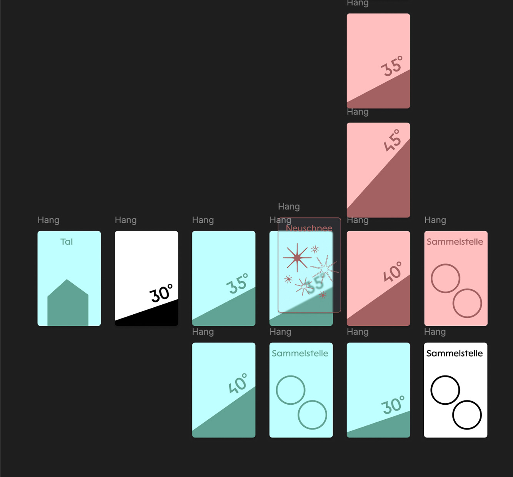

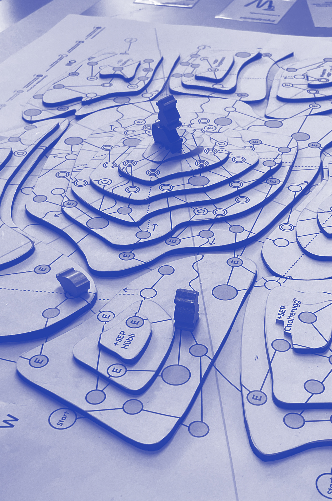

Usertestings
User feedback was the compass guiding our entire project. We conducted numerous playtesting sessions with a diverse range of participants, including avalanche safety beginners, experienced backcountry enthusiasts, game design experts, and professionals from White Risk (SLF). Using methods like think-aloud testing and facilitated playtests, we gathered invaluable insights into game mechanics, clarity, and the educational impact. This continuous feedback loop was crucial for balancing fun with factual accuracy, ensuring Touriski is not only playable and engaging but also a responsible and effective tool for learning.
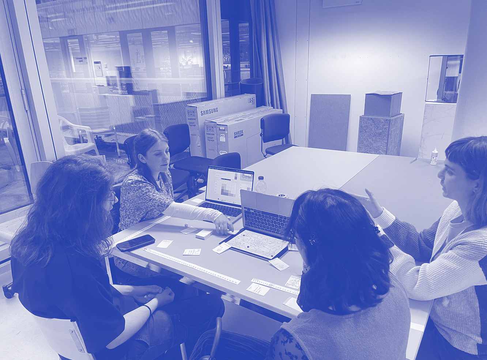
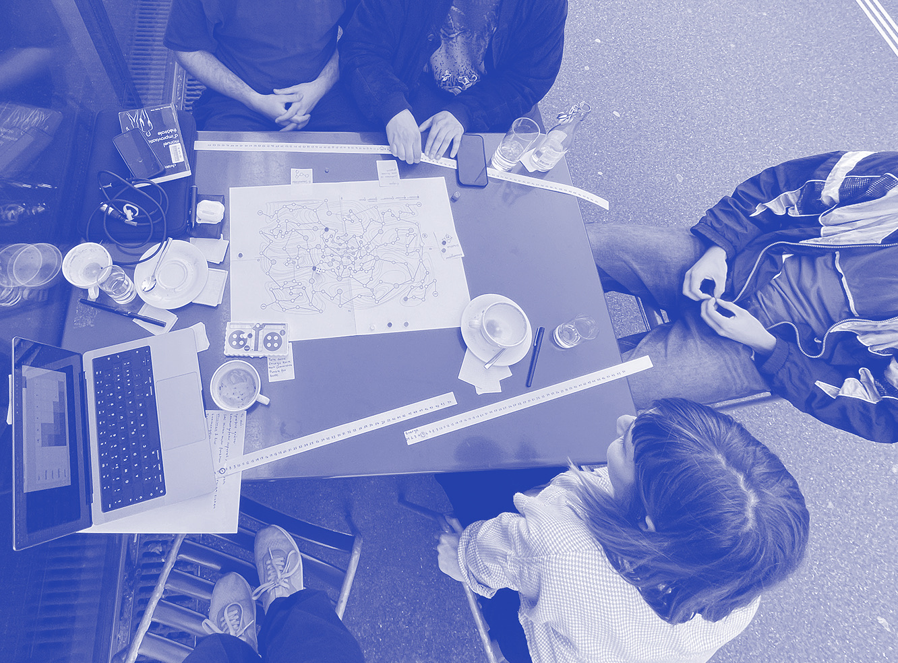
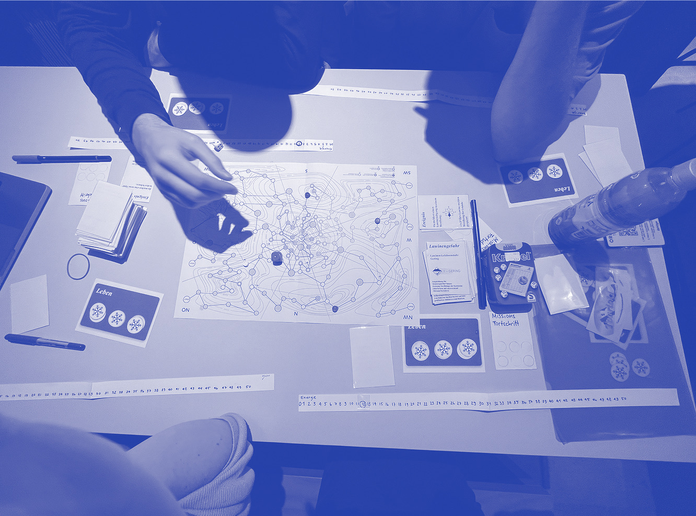
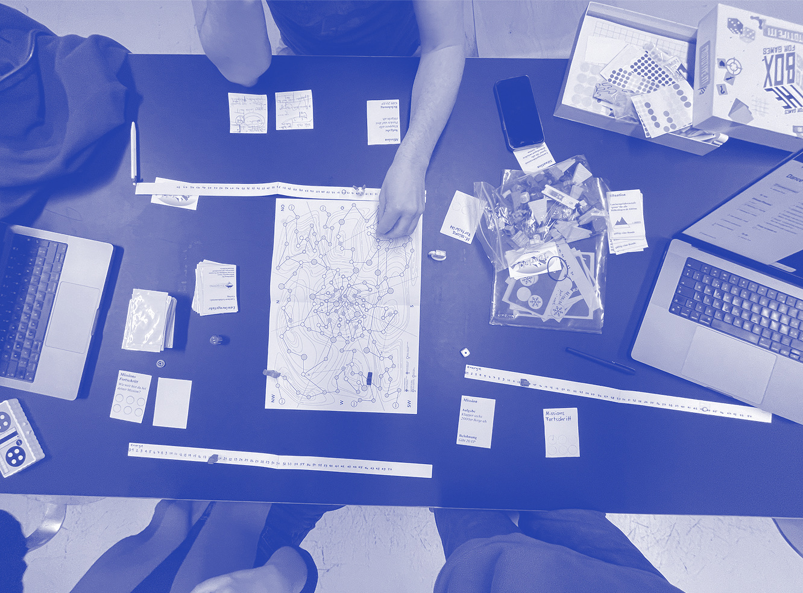
outcome
Those are our main key messages featured in the game narrative.
General
1x Game
board
2x Consequence tables
1x White dice
1x Blue dice
12x Avalanche
tokens
6x Play figures
1x Booklet with Game rules
Cards
6x Energy
levelsCards
6x Transceiver cards
54x Equipment cards
82x Action cards
26x
Avalanche danger level cards
17x Quiz cards
6x Rescue Cards
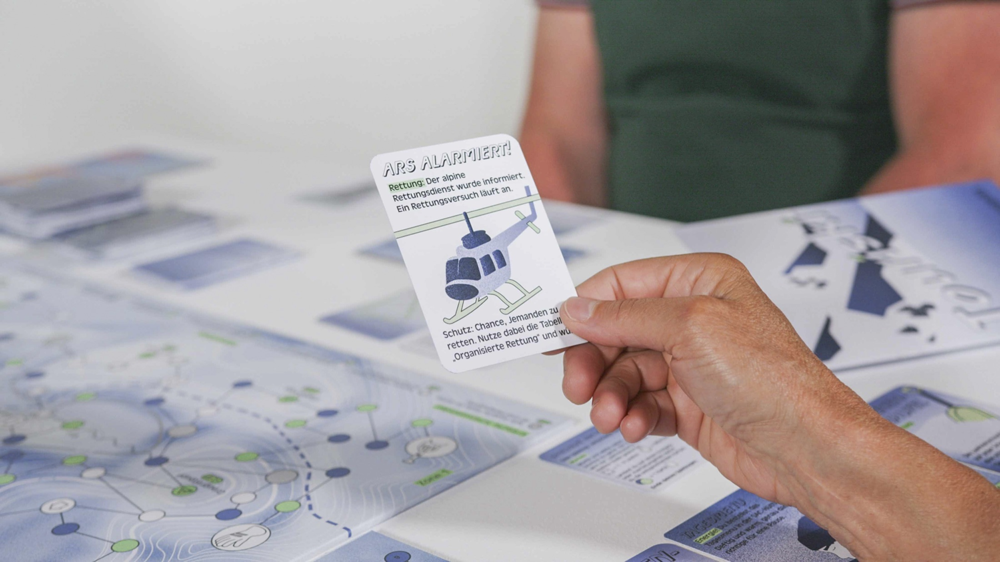
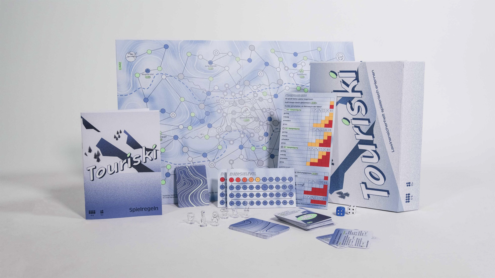
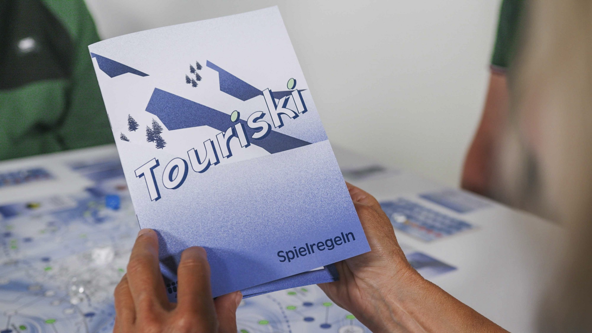